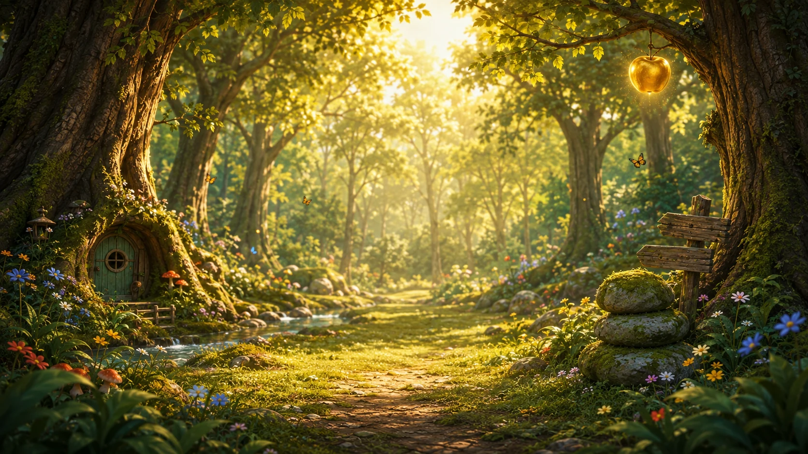

Woodland Search
A bigger little adventure is waiting.
Travel through ten places in the Whispering Woods. Find all ten friends, discover hidden Heart Seeds and keep an eye out for little woodland secrets. Take all the time you need.
✦ 10 paths✦ 10 Heart Seeds✦ Secret finds✦ Gentle hints

- 1Golden Apple
- 2Glowing Pool
- 3Little Stream
- 4Sunflower Valley
- 5Lantern Village
- 6Sunlit Path
- 7Old Woodland Trail
- 8Quiet Evening
- 9Meadow Opening
- 10Winter Circus
Path 1 of 10 · Golden Apple Clearing
Find Barnaby
Barnaby has wandered somewhere into the clearing.
0 / 10
0 / 10
Look carefully through the clearing.
Wonderful spotting!
You found Barnaby!
The path is glowing a little brighter now.
Heart Seed found
 Secret found
Secret found
Another woodland path is waiting.